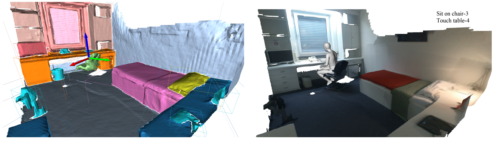
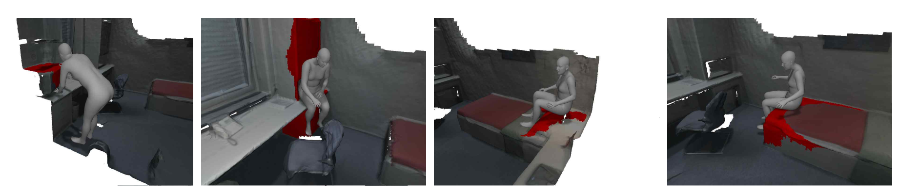

Overview
We propose COINS, for COmpositional INteraction Synthesis with Semantic Control.
Given a pair of action and object instance as the semantic specification, our method generates virtual humans naturally interacting with the object (first row). Furthermore, our method retargets interactions on unseen action-object combinations (second row) and synthesizes composite interactions without requiring any corresponding composite training data (third row).

Using COINS, we populated a modern loft scene with virutal humans performing diverse interactions.
Demo
Here we show an interactive demo where you can choose a list of interactions in the format of 'action-object category-object id' and browse randomly generated interactions.
This demo may take some time to load at the first time. Please click the 'visualize' button to show the next generated interaction. You can rotate and zoom the scene by mouse or touching just like most popular 3D viwers.
Method
Given a 3D scene and semantic specifications of actions (e.g., “sit on”, “touch”) paired with object instances (highlighted with color), COINS first generates a plausible human pelvis location and orientation and then generates the detailed body.

We leverage transformer-based generative models for human pelvis and body generation. The articulated 3D human body surface points and 3D objects are jointly encoded in a unified latent space, and the semantics of the interaction between the human and objects are embedded via positional encoding.

PROX-S Dataset

The PROX-S dataset is a human-scene interaction dataset annotated on top of PROX and PROX-E, which contains:
(1) Scene instance segmentation, provided as per mesh vertex labels of instance ID and mpcat40 category ID
(2) Interaction semantic annotation, provided as per-frame SMPL-X body fitting with semantic labels in the format of a list of action-object pairs.
We provide the dataset here and please refer to the code repository for utility scripts.
Results
Our method COINS generates more physically feasible and human-like results than baselines.

Novel interactions of unseen action-object pairs created by COINS.

We explicitly control COINS to generate bodies of varing shape sizes, including unseen extremely thin and heavy bodies.

Synthesized interactions with noisily segmented objects (visualized as red).

Video
Citation
@inproceedings{Zhao:ECCV:2022,
title = {{COINS}: Compositional Human-Scene Interaction Synthesis with Semantic Control},
author = {Zhao, Kaifeng and Wang, Shaofei and Zhang, Yan and Beeler, Thabo and Tang, Siyu},
booktitle = {European conference on computer vision (ECCV)},
year = {2022}
}